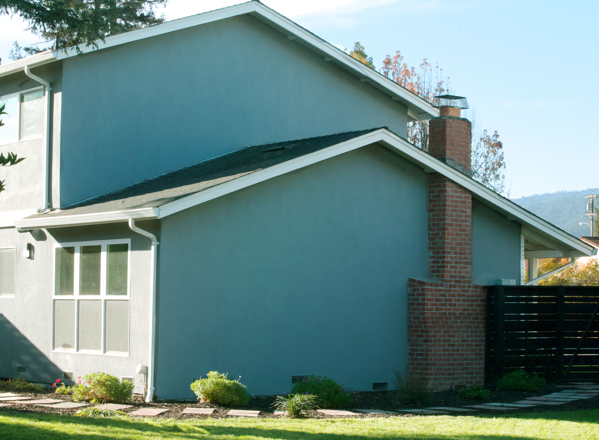
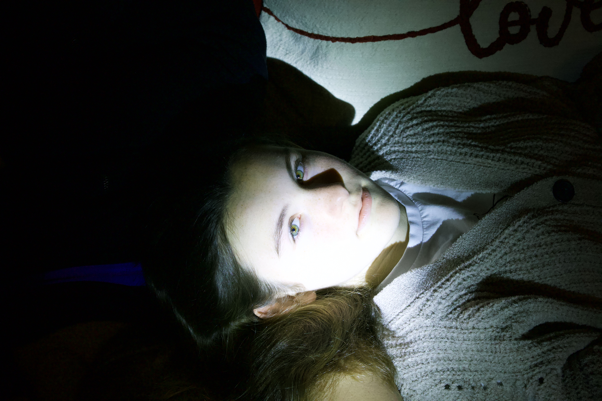
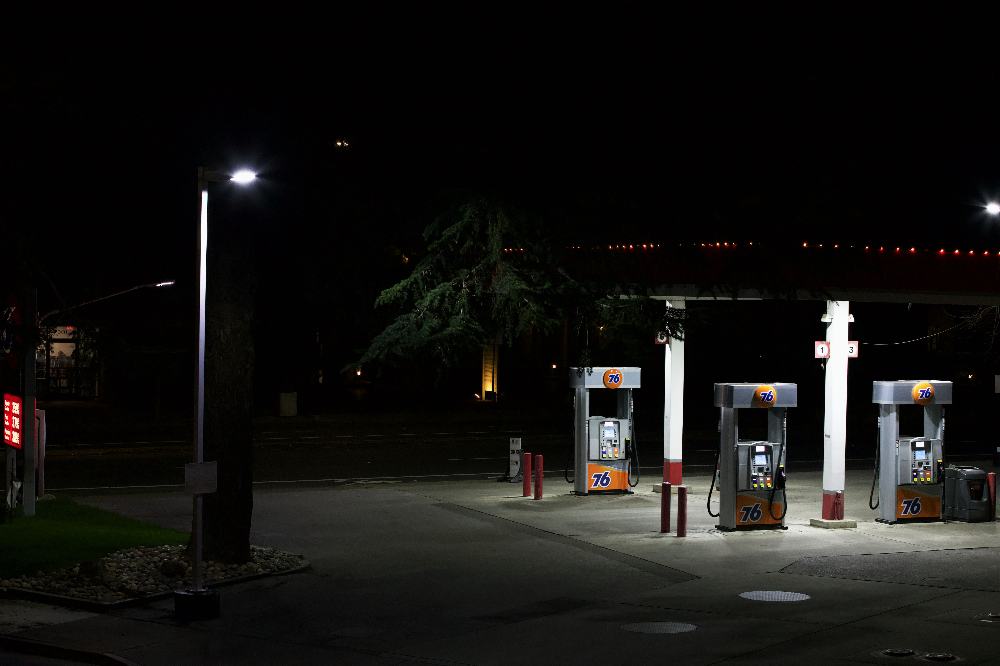
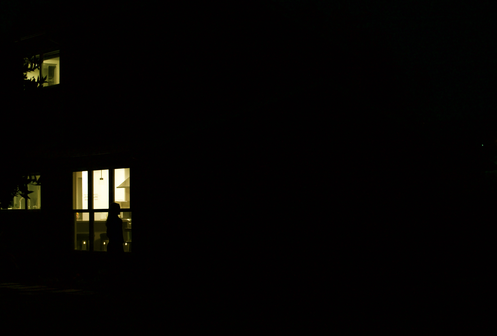

Suffocating in Suburbia
Hannah Grannis
I prefer photography because it allows me to capture moments in their rawest form, and allows me space to explore the unfamiliar.
Photography, allows me to communicate my feelings in a vulnerable manner and I have found that my art has become a healing process for me. In the process of creating, I uncover more parts of myself.

Deception
12"x16"; Photograph; Dec 2020

Caged Bird
20"x24"; Photograph; Jan 2021

History in the Streets
11"x14"; Photograph; Feb 2021

Venomous
11"x14"; Photograph; Jan 2021

Ghost, Again
12"x16"; Photograph; Oct 2020
With the emergence of COVID-19, human beings are experiencing unprecedented amounts of
isolation, and for myself, overwhelming feelings of discomfort and need of an escape from the
home. As a result of being quarantined, I was allowed the time to reexamine my suburban
environment and the discomfort I now feel within it. With my photographs, I aim to explore and
understand my experience of isolation in suburbia and the lurking darkness disguised within it.
Photography as my method of expression allows me to capture moments in their rawest form. As an artist, I prefer to utilize photography because it allows me to examine a scene in-depth and then manipulate it to my preference. Despite my appreciation for other mediums, I believe photography allows me the space to both test new strategies and explore the unfamiliar.
Art, and more specifically photography, allows me to communicate my feelings in a more comfortable and vulnerable manner. I have found that my art has become a healing process in itself for me, and in the process of creating I uncover more parts of myself.
Photography as my method of expression allows me to capture moments in their rawest form. As an artist, I prefer to utilize photography because it allows me to examine a scene in-depth and then manipulate it to my preference. Despite my appreciation for other mediums, I believe photography allows me the space to both test new strategies and explore the unfamiliar.
Art, and more specifically photography, allows me to communicate my feelings in a more comfortable and vulnerable manner. I have found that my art has become a healing process in itself for me, and in the process of creating I uncover more parts of myself.
Suffocating in Suburbia
Hannah Grannis
Deception
12"x16"; Photograph; Dec 2020
Caged Bird
20"x24"; Photograph; Jan 2021
History in the Streets
11"x14"; Photograph; Feb 2021
Venomous
11"x14"; Photograph; Jan 2021
Ghost, Again
12"x16"; Photograph; Oct 2020
o